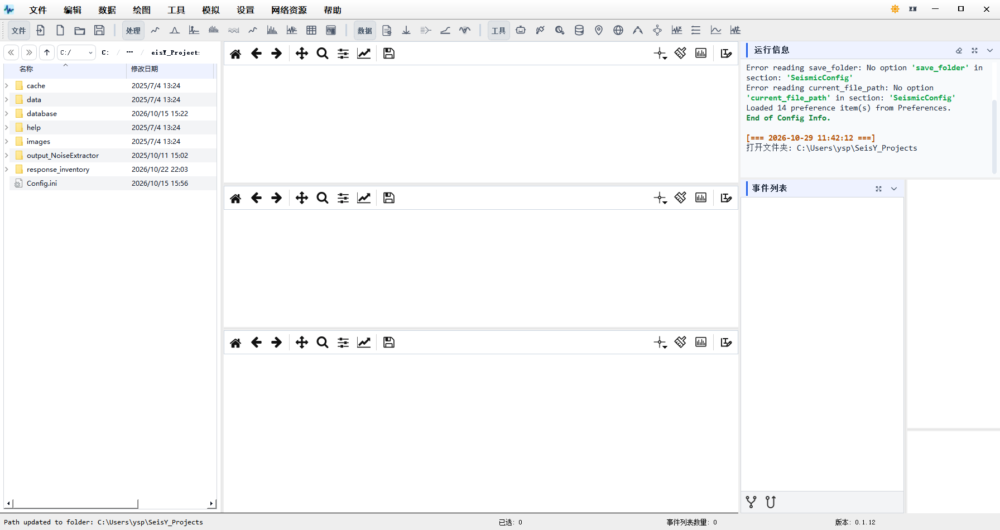
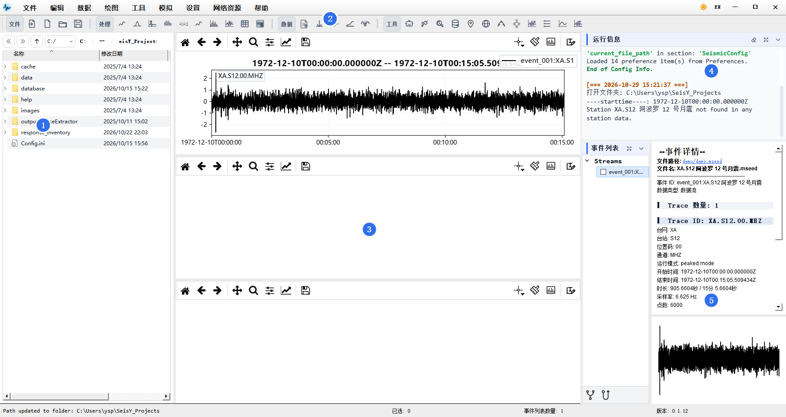

总览与主界面
SeisY 是行星地震数据的综合分析平台，主要处理阿波罗月震、火震（InSight）和地球台网数据。 本章说明主窗口的每个区域负责什么，以及第一次打开软件时的推荐顺序。
窗口分区

主窗口由五块区域组成：
| 区域 | 位置 | 作用 |
|---|---|---|
| 菜单栏与工具栏 | 顶部 | 全部功能入口。菜单是功能最全的入口，工具栏只放高频操作 |
| 文件浏览器 | 左侧 | 浏览工作目录，双击文件即导入 |
| 绘图画布 | 中间 | 三块画布，可分别显示不同事件或不同处理阶段的结果 |
| 运行信息 | 右上 | 运行日志。处理出错时先看这里，它保留了完整堆栈 |
| 事件列表 | 右下 | 已导入的事件。绝大多数处理命令都作用于这里选中的事件 |
底部状态栏显示当前工作目录、已选事件数、事件列表数量和版本号。
三块画布的用途
画布不是「备用窗口」，而是用来做对比的：常见的用法是一块放原始波形，一块放滤波后，
一块放频谱。每块画布右上角有独立的工具栏，缩放和平移互不影响。
载入数据之后

导入事件后会发生三件事：
- 事件列表出现一条记录，名字格式是
event_001:台站_起始时间； - 在事件列表里单击该记录，波形才会画到画布上（只导入不点击，画布是空的）；
- 状态栏的「事件列表数量」变成实际条数。
上图画布中是事件 XA.S12.00.MHZ 的一道波形：横轴是时间，纵轴是振幅（Counts）。
真实数据里若存在缺样，波形会在缺口处断开留空——SeisY 用 -1 标记阿波罗数据的
缺失样本，画图时跳过。怎么认出缺口、怎么判断占比，见「数据全览」一章的
「图上那条红线」；怎么修，见「预处理」一章的缺样插值部分。
第一次使用的推荐顺序
建议路径
- 设置工作目录：文件 › 配置文件 › 设置工作目录， 选一个专门存放数据的文件夹。所有导入、导出默认都落在这里。
- 获取数据：数据 › 下载地震数据，或 文件 › 导入文件 打开本地已有的文件。
- 看一眼数据全览：确认台站数、采样率、时间范围、缺失比例是否符合预期， 再开始处理。
- 预处理：去趋势 → 滤波 → 去仪器响应。顺序不要颠倒。
- 绘图分析：画波形、画频谱，或用 工具 里的专业模块。
界面约定
- 菜单路径统一写成 数据 › 滤波 › 滤波 的形式， 与软件里看到的完全一致。
- 带
>的三级菜单（如 数据 › 预处理 › 去趋势）在 软件里表现为子菜单，鼠标悬停即可展开。 - 本章所有截图取自 0.1.12 版本。界面细节可能随版本变化，菜单路径基本稳定。